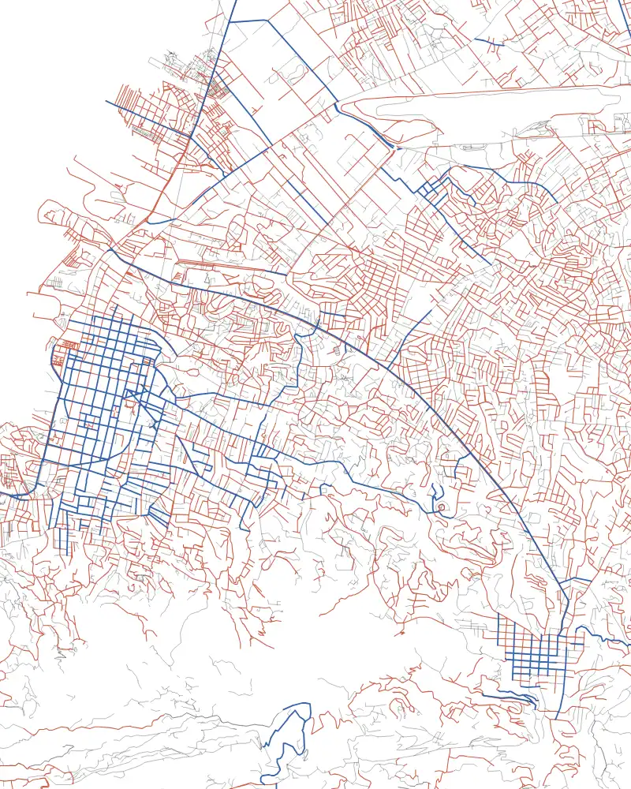

Inspired by Magazine
La malaltia que vam esborrar
El 1967, la verola afectava entre 10 i 15 milions de persones l'any. Deu anys després, es va registrar l'últim cas natural. Com es fa desaparèixer una malaltia?

Qui va dibuixar el mapa d'Haití?
Quan un terratrèmol va destruir Port-au-Prince el 2010, la ciutat gairebé no sortia als mapes d'internet. En un mes, sis-centes persones la van dibuixar carrer a carrer, sense cap encàrrec.

L'últim sopar de Leonardo
Tretze homes en filera, estovalles de lli, gots de vidre i cap anyell. L'últim sopar de Leonardo no encaixa amb la Jerusalem del segle I: què va ser realment aquell sopar?

Per què van aixecar Stonehenge?
Els druides no el van construir. L'arqueologia recent el llegeix com un monument als avantpassats: la pedra per als morts, la fusta per als vius.

Qui era realment Jesús?
No es deia Jesús, va néixer uns anys «abans de Crist» i cap text antic no descriu la seva cara. Què en sap la història, com l'ha pintat cada cultura i com el veuen les altres religions.

Jesús no va escriure res
Jesús no va deixar cap llibre. Unes cartes, quatre relats i dues frases d'historiadors antics permeten seguir-ne el rastre.

El Niño i La Niña, les dues cares del Pacífic
Cada pocs anys, un tros del Pacífic s'escalfa uns quants graus i desencadena un vaivé de vents i aigua que porta pluges i sequeres a mig món.

Arribats a última hora
Si la història de l'univers durés un any, cada segon valdria 437 anys. Nosaltres hi apareixem el 31 de desembre al vespre.

De què mor el món: el cor, abans que la guerra
Entre el que temem i el que ens mata hi ha molta distància. Una de cada tres morts al món és cardiovascular; el càncer és la segona causa.

La migració més gran de la Terra passa cada nit
El 1942, un sonar de l'armada nord-americana va trobar un fons marí on no n'hi havia cap. Era una capa d'animals que puja i baixa amb la llum del sol.

La guerra entre virus i bacteris
En cada gota de mar, centenars de milers de virus ataquen bacteris que es defensen sense treva. D'aquesta guerra invisible, la ciència en va treure el CRISPR.

La cinta transportadora de l'Atlàntic
El corrent del Golf és només la meitat visible d'una gran cinta transportadora que recorre tot l'Atlàntic, i els científics discuteixen si s'està afeblint.